Vuelos en directo
Miles de aviones con telemetría real. Busca un indicativo (AFR36KN) y síguelo con ruta completa, ETA y cámara dedicada.
PANOPTES es una consola de inteligencia de fuentes abiertas: vuelos, buques, satélites, cámaras públicas, bases militares, centrales nucleares e infraestructura crítica sobre un globo 3D fotorrealista. Sin cuentas, sin servidores ajenos, sin cajas negras.
Arranca sin claves: imagen satelital, terreno, vuelos, satélites, terremotos y cámaras públicas funcionan desde el primer minuto. Las claves son mejoras, no requisitos, y se añaden desde la propia app.
Cada capa es un módulo independiente con su fuente, su licencia y un indicador honesto de frescura. Nada inventado: si un feed está caído o desfasado, lo verás.
Miles de aviones con telemetría real. Busca un indicativo (AFR36KN) y síguelo con ruta completa, ETA y cámara dedicada.
Viaja dentro del avión con escalera de cabeceo, horizonte, marcador de trayectoria, Mach y rumbo. En km/h y metros.
Más de 800 objetos con elementos orbitales, anillo de órbita y dossier completo: NORAD, COSPAR, apogeo, perigeo.
12.000 barcos en vivo con bandera, destino, carga peligrosa, foto y comprobación contra listas de sanciones.
Bases militares, nucleares, centrales eléctricas, puertos, aeropuertos, volcanes y estrechos, con filtros por tipo.
Solo cámaras oficiales de tráfico y ciudad, proyectadas dentro de la ciudad 3D, con filtro de vídeo en directo.
Andando, en coche o volando. Pulsa Reproducir y sigue el viaje en vivo con pasos, tiempos y distancias.
Líneas, áreas y marcadores sobre los edificios, anclados al terreno real y guardados en tu navegador.
NVG, FLIR térmico, CRT y un dron UHD libre. Todo el planeta en vivo re-renderizado a través de otro sensor.
Conflictos, desastres, emergencias aéreas, interferencia GPS, incendios FIRMS y radiación Safecast.
Con una clave de OpenAI, pide «llévame a Barajas y sigue el avión más cercano» y el agente lo hace.
Español por defecto, inglés a un clic. Tooltips, desplegables y scrollbars propios, atajos de teclado en todo.
Grabaciones reales de la aplicación, sin montajes. Pasa el ratón por encima para inclinar el visor.
Teselas fotorrealistas de Google a través de Cesium, terreno mundial y tres niveles de detalle 3D con carga progresiva: teselas ligeras mientras te mueves, detalle completo al detenerte y siempre el centro primero.
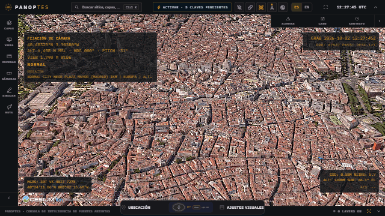
Escribe el indicativo en Ctrl+K y PANOPTES enfoca ese avión, oculta el resto y dibuja la ruta publicada en dos colores: lo recorrido en cian y lo que queda en naranja, con origen, destino y ETA.
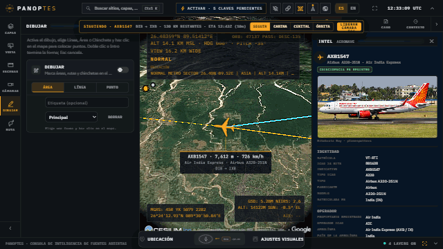
Con el diseño Táctico, la cabina se convierte en el HUD de un avión de combate: simbología verde colimada, escalera de cabeceo que rota con la vista, marcador de trayectoria, Mach, velocidad vertical y rumbo.
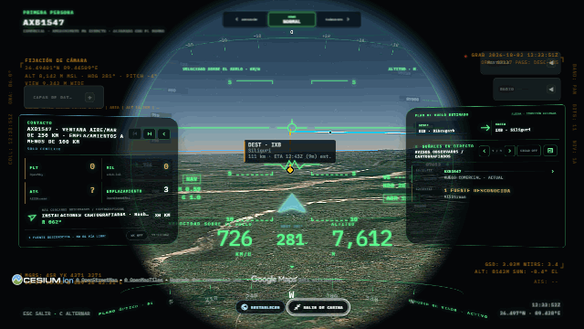
Marca un punto A y un punto B, elige andando, en coche o volando y pulsa Reproducir. Verás la distancia, la duración, la hora de llegada, cada paso con su tiempo y el viajero avanzando sobre el mapa.
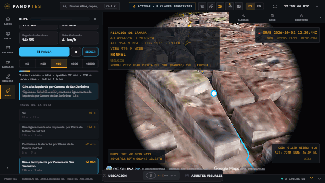
Más de 20.000 bases militares, 1.200 instalaciones nucleares, centrales eléctricas, puertos, aeropuertos, volcanes y estrechos marítimos, extraídos de OpenStreetMap, Wikidata, WRI y NGA. Haz clic en cualquiera para su dossier.
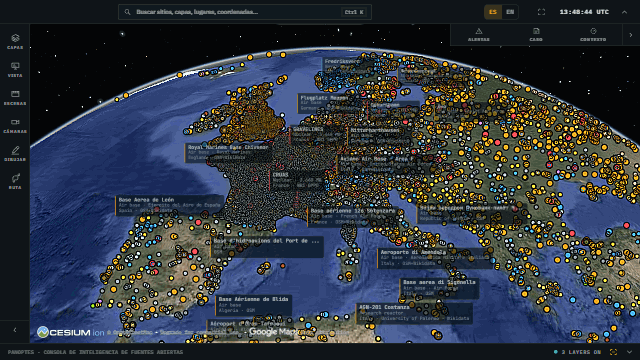
Más de 15.600 cámaras oficiales de tráfico y ciudad, publicadas por sus operadores. Elige una y PANOPTES proyecta su imagen dentro de la ciudad 3D, con su campo de visión, mientras el tráfico en vivo circula por las calles.
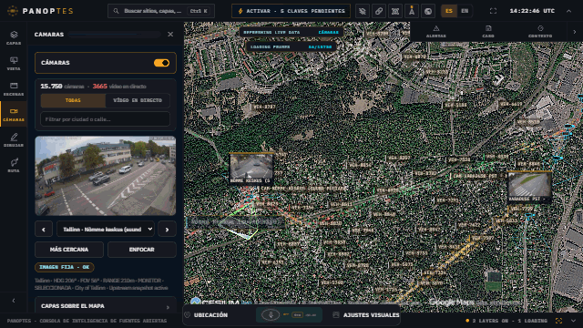
Líneas, áreas y marcadores en naranja, drapeados sobre los edificios y anclados a la altura real del terreno. Tus zonas se quedan guardadas en el navegador y puedes volar a ellas o borrarlas una a una.
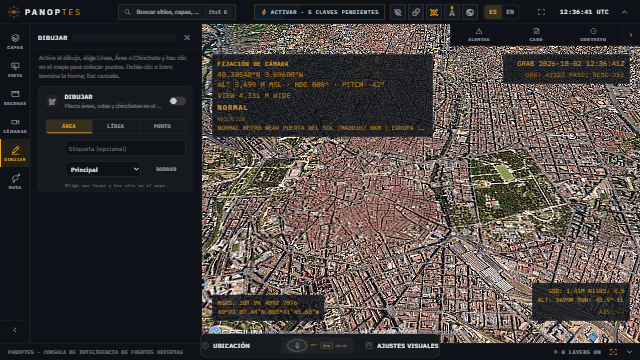
Normal, visión nocturna con viñeta, FLIR térmico con paleta Ironbow, CRT con scanlines o un dron UHD libre con WASD y ratón. Todo el planeta en vivo, re-renderizado con shaders GLSL.
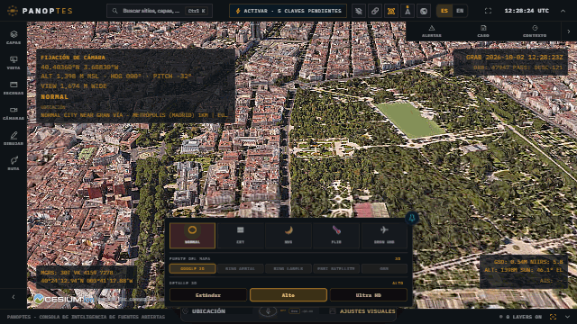
Toda la interfaz, cada tooltip y cada lectura dinámica cambia entre español e inglés desde la barra superior, incluidas las instrucciones de ruta y los textos de la cabina.
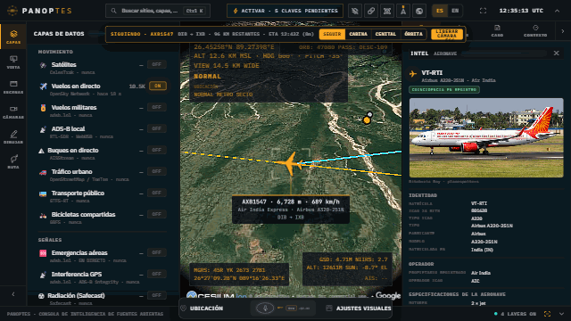
Cada capa indica su fuente, su licencia y cuándo se actualizó por última vez.
Haz clic en cualquier imagen para verla a pantalla completa.
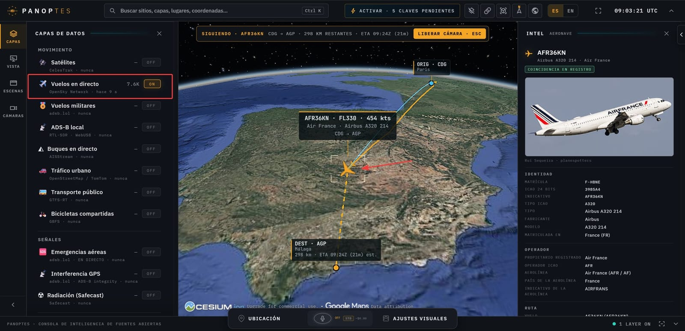
Ruta de vuelo en dos colores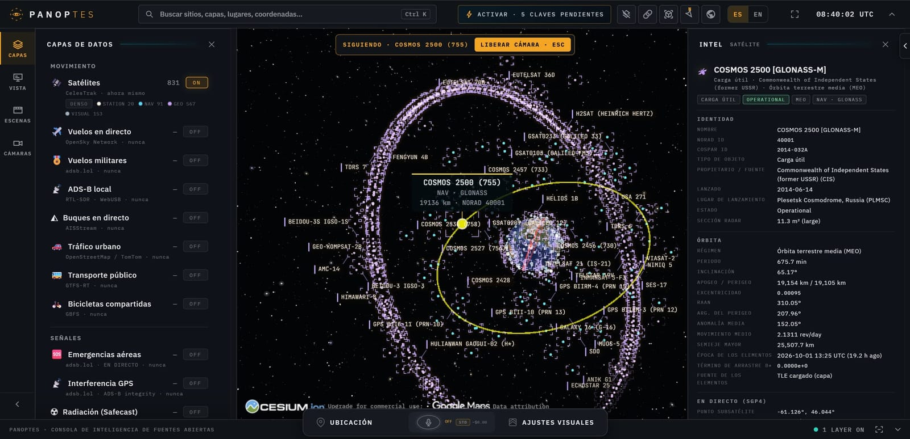
Dossier orbital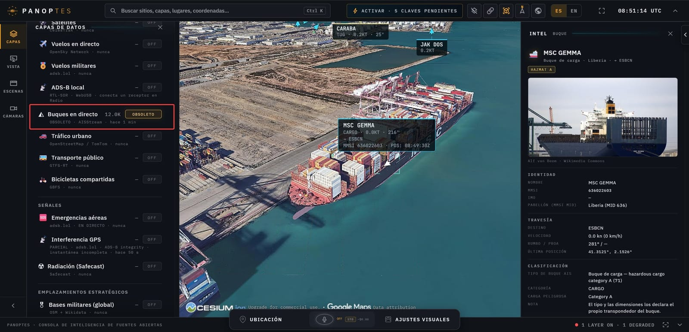
Buque en el puerto de Barcelona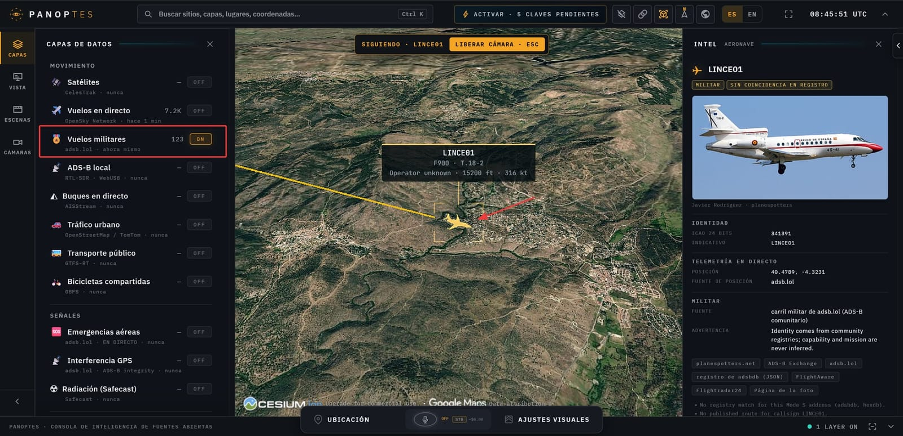
Vuelo militar con foto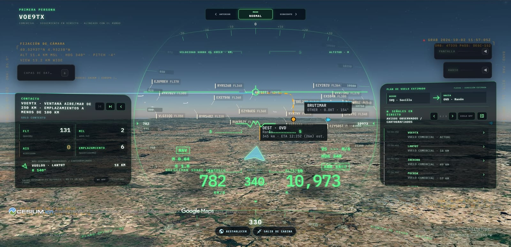
HUD de caza en cabina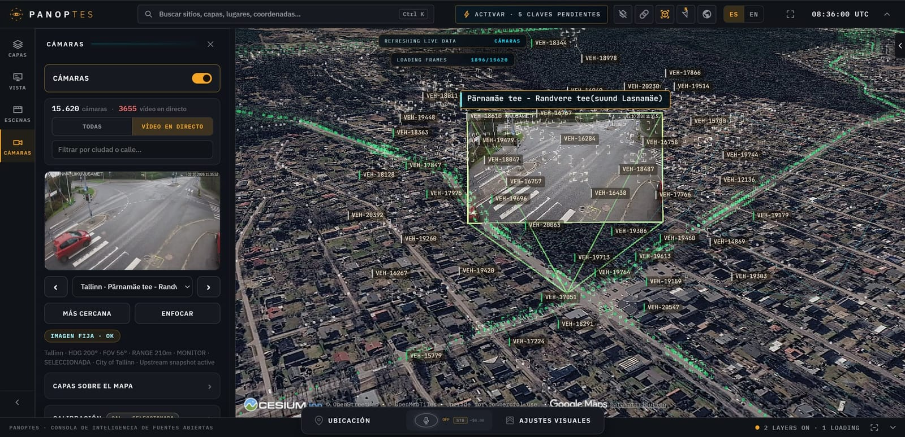
Cámara proyectada en 3D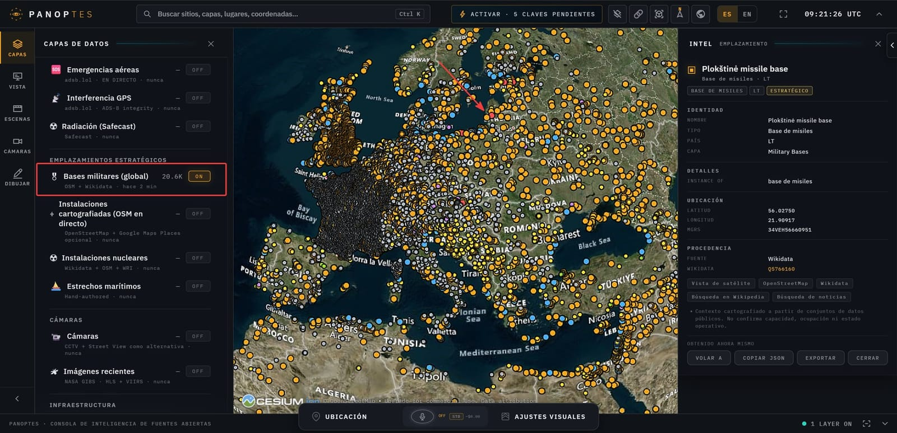
20.600 bases militares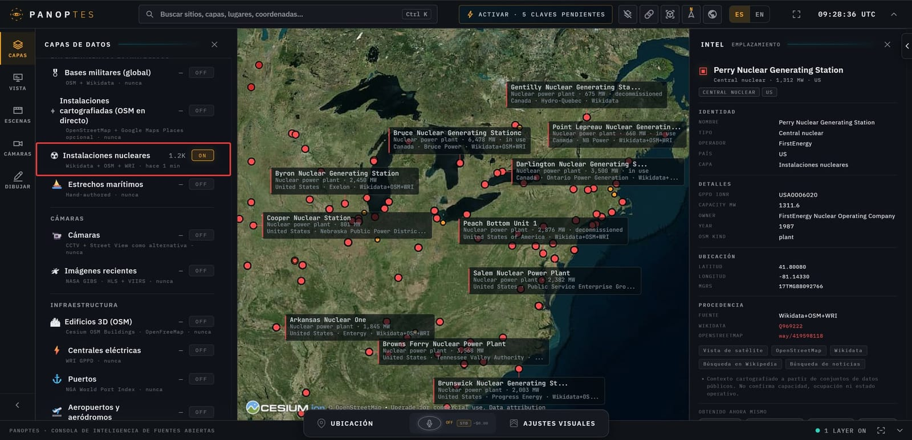
Centrales nucleares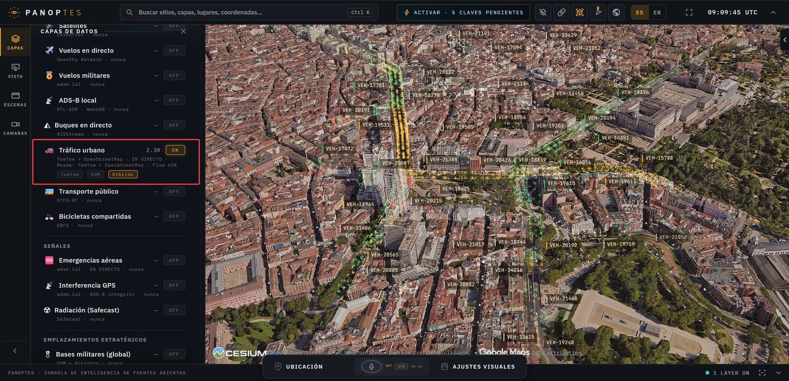
Tráfico urbano en Madrid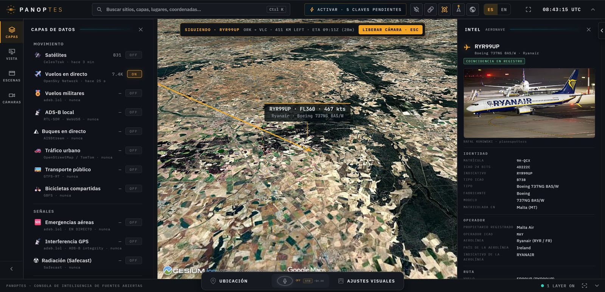
Dossier de aeronave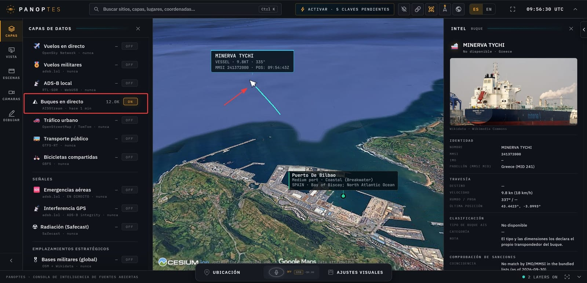
Buque frente a Bilbao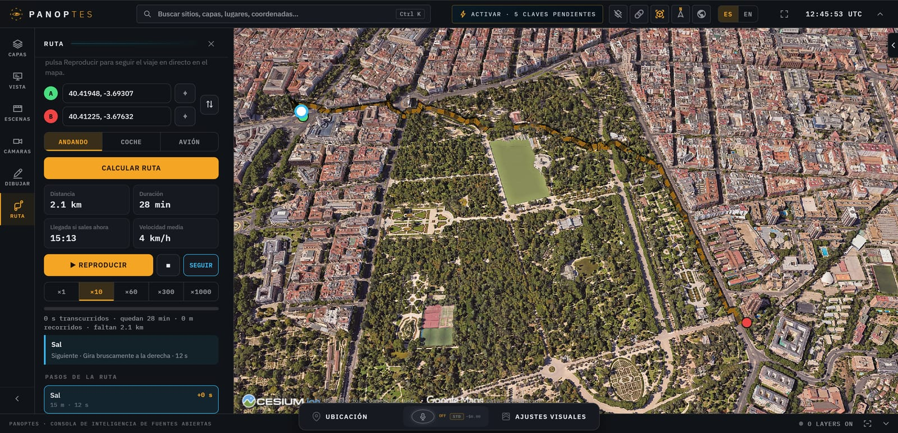
Ruta a pie por Madrid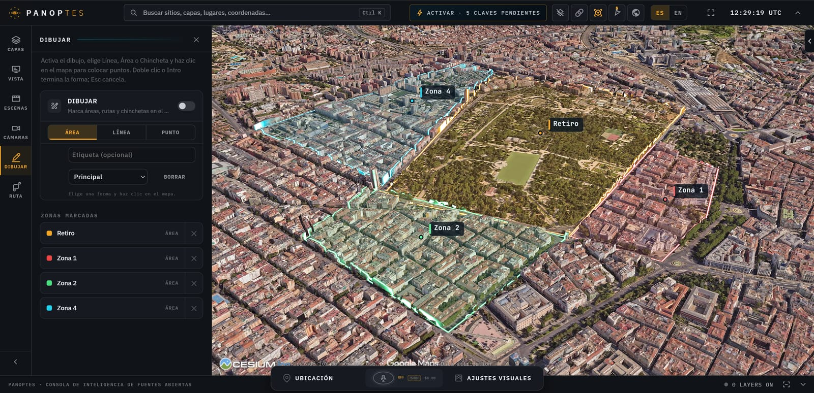
Zonas dibujadas sobre el Retiro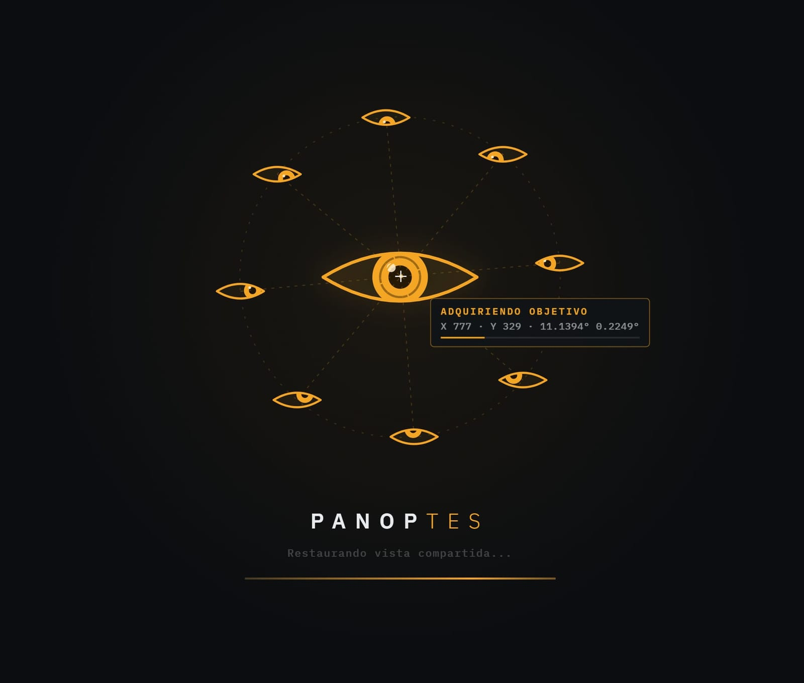
Pantalla de cargaNecesitas Node.js 24.14+ o 26.x. Todo corre en tu máquina; las claves se añaden después desde el panel POWER UP de la app.
git clone https://github.com/afsh4ck/panoptes.gitcd panoptes && npm ci && npm run doctornpm run devImagen Esri, terreno, vuelos, satélites, terremotos, cámaras y radio. OSM si Esri no responde.
Teselas fotorrealistas de Google y terreno mundial para uso personal no comercial.
El mismo 3D desde Google, más búsqueda de lugares. Ruta con facturación: pon límites.
PANOPTES modela eventos, activos, infraestructura y sistemas: aviones, barcos, satélites, incendios, cámaras, emplazamientos y ciudades. No busca personas, no hace reconocimiento facial y no rastrea individuos. Solo usa cámaras publicadas intencionadamente por sus operadores, nunca cámaras privadas o sin proteger.
Sí. El código es MIT y arranca sin ninguna clave. Algunos proveedores opcionales (Google Maps, OpenAI, TomTom) tienen sus propios planes y cuotas.
En el archivo .env local de tu clon, con permisos solo para tu usuario. El servidor escucha en localhost y las usa para hablar con los proveedores; nunca salen de tu máquina.
La mayoría sí (vuelos, buques, satélites, eventos). Las capas estratégicas son conjuntos precalculados con fecha de extracción. Cada capa muestra su frescura y avisa si un feed está caído o desfasado.
No. El nivel de detalle 3D Estándar funciona en portátiles modestos; Ultra HD aprovecha GPUs y conexiones rápidas.
No. Es una visualización exploratoria de datos públicos: pueden estar retrasados, incompletos o ser estimaciones. Verifica siempre con fuentes autorizadas.
Abre un issue o un pull request en GitHub. Cada capa es un módulo independiente: añadir una fuente nueva es seguir el mismo patrón.
Clónalo, arráncalo y mira el planeta como nunca. Si te gusta, una estrella ayuda a que más gente lo encuentre.